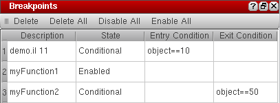
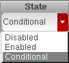

Managing Breakpoints
Use the Breakpoints assistant to view the list of breakpoints currently set in your code, or change their state or condition. The Breakpoints assistant lists both line and function breakpoints.
To view or edit the list of breakpoints in the Breakpoints assistant:
-
Choose Window – Assistants – Breakpoints. The Breakpoints assistant displays.
Breakpoints assistant lists all current breakpoints even if the code file containing the breakpoints is not currently open in the SKILL IDE. -
To edit a breakpoint, click the line containing the breakpoint in the Breakpoints assistant.
You can only change the State, Entry Condition, and Exit Condition for a breakpoint. -
To change the State of the breakpoint, double-click the current state and select a different option from the drop-down list-box. The available options are: Disabled, Enabled, and Conditional.
 - To change the entry condition for the breakpoint, double-click the current Entry Condition and specify a new condition. The debugger will halt the program execution when the entry condition evaluates to true.
-
To change the exit condition for the breakpoint, double-click the current Exit Condition and specify a new condition. The debugger will halt the program execution when the exit condition evaluates to true.
Exit Conditions are not applicable for line breakpoints.
Breakpoints Assistant
The following table describes the Breakpoints assistant buttons for deleting, disabling, or enabling breakpoints.
| Column | Description |
|---|---|
|
Deletes the selected breakpoint from the code. Hold the CTRL key to select multiple breakpoints or hold the SHIFT key to select a contiguous range of breakpoints for deletion. |
|
Related Topics
Configuration of Conditional Breakpoints
Setting Conditional Breakpoints
Setting Unconditional Breakpoints
Return to top